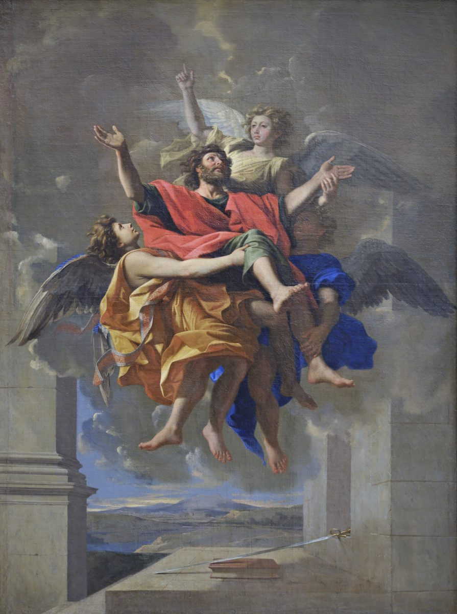

2 Corinthians 12 — The Mister Translation

⚠ The painting decides what Paul twice says he does not know. In v2 and again in v3 he cannot say whether the man was snatched up ‘in the body or out of the body’; Poussin paints a body, carried by three angels. The angels are not in the text either. The sword and the book on the ledge are Paul’s traditional emblems in Christian art, the book for his letters and the sword for the death tradition gives him, which the New Testament does not narrate; that is reported here, not checked.

“I must boast” — and the Byzantine text that says something else. Kauchasthai dei, “boasting is necessary,” are the two words that opened 11:30, “If I must boast.” The critical editions (Westcott–Hort, Tregelles and the Nestle–Aland 28th) then add ou sympheron men, “it does no good,” so that the boast is necessary and useless at once. The Byzantine text of Robinson–Pierpont reads dē, “indeed,” for dei and sympherei moi, “it is of benefit to me,” and so loses the necessity: the KJV reads “It is not expedient for me doubtless to glory,” and the Geneva “It is not expedient for me no doubt to rejoice.” The ASV reads “I must needs glory, though it is not expedient”; the NWT 1984 reads “I have to boast. It is not beneficial”; the Douay reads “If I must glory (it is not expedient indeed).”
“Visions and revelations of the Lord” — from him, or of him? Optasia, “vision,” stands in four verses of the New Testament: Luke 1:22, where Zechariah comes out of the sanctuary unable to speak; Luke 24:23, the women’s “vision of angels”; Acts 26:19, Paul’s “heavenly vision”; and this one. The genitive kyriou can mean revelations that come from the Lord or revelations in which the Lord is seen, as “a revelation of Jesus Christ” can at Galatians 1:12; the English “of” keeps both. “Lord” is kept, because the Lord of this chapter is the one Paul begs at v8 and whose power answers him at v9, “the power of Christ.”
“I know a man in Christ” — Paul speaking of himself as someone else. Through v5 the man is “he,” and the pronoun gives way at v7, where the revelations are “given to me.” Paul tells his greatest experience at arm’s length, and only a fool’s speech would make him tell it at all. “Such a man” (ho toioutos) is said three times, at vv2, 3 and 5, and is kept each time. Dekatessares, “fourteen,” stands in three verses of the New Testament: Matthew 1:17, the three sets of fourteen generations; this one; and Galatians 2:1, “after fourteen years I went up again to Jerusalem.” Whether Paul’s two fourteens count from the same starting point is argued; neither letter connects them.
“In the body or out of the body, I do not know; God knows” — said twice. The parenthesis comes in v2 and again in v3, nearly word for word, and the second time the critical text has chōris, “apart from,” where the Byzantine text repeats ektos, “outside.” That is why the KJV reads “out of the body” both times, while the ASV and the NWT 1984 both read “apart from the body” in v3. Twice the man who was there declines to say how he got there.
⚠ The third heaven and paradise — one journey, or two stages? Heōs tritou ouranou, “as far as the third heaven”: the phrase stands in one verse of the Bible, this one. The Hebrew Bible does not number the heavens; its fullest phrase is “the heavens and the heavens of the heavens” (Deuteronomy 10:14). Jewish writings outside the Bible do count them, some three and some seven, and at least one, the book called 2 Enoch, puts paradise in the third; that is reported here, not checked, and the dates of those books are disputed. Then v4: “snatched up into paradise.” Paradeisos, a Persian word for a walled park, stands in three verses of the New Testament: Luke 23:43, “today you will be with me in Paradise”; this one; and Revelation 2:7, where the tree of life stands “in the paradise of God.” The Greek Old Testament had already used it for the garden in Eden: paradeison en Edem at Genesis 2:8, and “the tree of life in the midst of the paradise” at 2:9, where this translation’s Genesis 2:8 follows the Hebrew gan, “garden.” Whether vv2–4 describe one ascent told twice or a third heaven and then a paradise beyond it is argued, and the repeated “I know such a man” can be read either way.
“Snatched up” — harpazō, and where “rapture” comes from. The verb is a seizure, not a stroll: it is the Spirit that “snatched Philip away” from the eunuch, the child “snatched up to God” in Revelation 12:5, and the living “snatched up in the clouds” at 1 Thessalonians 4:17, and this translation prints “snatched” in all of them. The Latin Vulgate renders it raptum in v2 and raptus est in v4, from rapio, the source of English “rapture”; here the word still means what it meant in Latin, being carried off. The KJV, the ASV and the NIV all read “caught up”; the NWT 1984 reads “caught away”; the Geneva reads “taken up.”
“Unutterable utterances” — arrhēta rhēmata, and a silence that is a rule. The two words share a root: a rhēma is a thing said, and arrhētos, which stands in one verse of the New Testament, this one, is what cannot be said. This translation keeps the echo. Then ha ouk exon anthrōpō lalēsai, “which a man is not permitted to speak”: exon is “lawful, allowed,” so the words were not only beyond speech but forbidden to it. The KJV and the ASV both read “unspeakable words, which it is not lawful for a man to utter”; the NWT 1984 reads “unutterable words which it is not lawful for a man to speak”; the NIV reads “inexpressible things” and makes the second clause a matter of permission too; the Douay reads “secret words,” from the Vulgate’s arcana verba; and the Geneva reads “which are not possible for man to utter,” turning the permission into an inability.
Two men and one boast. “On behalf of such a man I will boast, but on my own behalf I will not”: the man of vv2–4 gets the boast, and Paul keeps the weaknesses. The Greek of v5 reads only “in the weaknesses”; the Byzantine text adds “my,” and English needs it either way. The NWT 1984 prints it in brackets, “except as respects [my] weaknesses”; the KJV reads “but in mine infirmities.”
“I will not be a fool, for I will be telling the truth.” Aphrōn, the fool of 11:16. A boast is foolish when it is not true, and his would be true, so he holds back for another reason. “I hold back” is pheidomai, the verb of 1:23, “it was to spare you that I did not come again to Corinth”: he spares them the rest of the account, so that a hearer will not credit him with more than he can see in him or hear from him. He wants to be judged by the man in front of them, whose bodily presence, his critics said at 10:10, “is weak.” The NWT 1984 reads “I shall not be unreasonable”; the KJV reads “I shall not be a fool”; the TLB reads “would be no fool in doing it.”
⚠ Where does verse 7 begin? A sentence the editions divide. “Even on account of the surpassing greatness of the revelations”: the Greek printed here, the SBL edition, ends the sentence of v6 with these words, and then begins again with dio, “therefore.” Read that way, the revelations are one more reason Paul holds back from boasting. The Byzantine text has no dio, so the words run straight on into what follows, and the revelations become the danger the thorn guards against: the KJV reads “And lest I should be exalted above measure through the abundance of the revelations”; the ASV reads “And by reason of the exceeding greatness of the revelations, that I should not be exalted overmuch”; the Douay reads “And lest the greatness of the revelations should exalt me.” The NWT 1984 follows the division printed here: “just because of the excess of the revelations. Therefore, that I might not feel overly exalted.” Hyperbolē, “surpassing greatness,” stands in seven verses of the New Testament, and four of them are in this letter: 1:8, 4:7, 4:17 and this one. At 4:7 the surpassing thing was the power, and it was God’s; here it is the revelations, and they nearly ruin him.
⚠ The thorn in the flesh — what was Paul’s thorn? Skolops is anything sharpened to a point, a stake or a thorn, and the word stands in one verse of the New Testament, this one. The Greek Old Testament uses its plural at Numbers 33:55 for the Canaanites Israel fails to drive out, who will be “barbs in your eyes”. Paul does not say what his was, and three answers are old. The first is a bodily illness: in Galatians 4:13–15 he first preached to them “because of a weakness of the flesh,” calls his condition a trial to them “in my flesh,” and says they would have torn out their own eyes and given them to him, which many read as a disease of the eyes. The second is people, his opponents, in the line of the barbs of Numbers 33:55, with the “angel of Satan” read as a human agent and the rivals of chapters 10–13 in view. The third, long current in the Latin West, is an inward temptation, encouraged by the Vulgate’s stimulus carnis, “goad of the flesh,” at a time when “the flesh” meant desire; that history is reported here, not checked. The text decides none of them and this page does not choose. The KJV, the ASV and the NWT 1984 all read “a thorn in the flesh”; the NIV reads “a thorn in my flesh”; the Geneva reads “a prick in the flesh”; the Douay reads “a sting of my flesh”; and the TLB chooses inside the verse, “a physical condition which has been a thorn in my flesh.”
“An angel of Satan, to keep beating me with his fists.” Angelos Satana: this translation keeps “angel,” as the NWT 1984 and the Douay do, because one chapter ago Satan disguised himself as “an angel of light” (11:14); the KJV, the ASV and the NIV read “messenger.” In Galatians 4:14 the Galatians received Paul himself “as an angel of God.” Kolaphizō, to strike with the fist, stands in five verses of the New Testament: Matthew 26:67 and Mark 14:65, the blows given Jesus at his trial; 1 Corinthians 4:11, “we are beaten with fists”; this one; and 1 Peter 2:20. The tense is present, a beating that goes on: the NWT 1984 reads “to keep slapping me”; the KJV and the ASV read “to buffet me”; the NIV reads “to torment me.” The passive “was given to me” names no giver, and the purpose stated twice, that Paul should not lift himself too high, is not one readers have found it easy to give to Satan.
“So that I would not lift myself too high” — said twice. Hyperairomai stands in two verses of the New Testament: this one, where it comes twice, and 2 Thessalonians 2:4, of the one who “exalts himself above every so-called god.” Tregelles prints the second clause only once, and the Vulgate has it once, which is why the Douay says it once, “lest the greatness of the revelations should exalt me.” The NIV also says it once: “in order to keep me from becoming conceited.” The KJV keeps both: “lest I should be exalted above measure.”
“Three times I begged the Lord.” Tris, “three times,” was the count of the beatings with rods and of the shipwrecks at 11:25; this third “three times” is the one he chose. The verb is parakaleō, the comfort-word that tolls through 1:4; here it is a plea. The KJV and the ASV both read “I besought the Lord thrice”; the NIV reads “I pleaded with the Lord”; the TLB reads “I begged God to make me well again,” making the Lord God, and the thorn an illness.
“My grace is enough for you” — and whose power? Eirēken is a perfect: “he has said,” an answer given once that still stands. Arkei soi hē charis mou, “my grace is enough for you”: the request was refused, and the refusal is the gift. ⚠ In the critical text the second half has no “my”: hē gar dynamis en astheneia teleitai, “for power is made perfect in weakness,” a statement about power itself. The Byzantine text adds mou, which is why the KJV reads “my strength is made perfect in weakness” and the Geneva reads “my power is made perfect through weakness.” The NWT 1984 marks the supplied word, “for [my] power is being made perfect in weakness”; the Douay, following the Vulgate’s virtus in infirmitate perficitur, has none: “for power is made perfect in infirmity.” The ASV and the NIV both print “my power.” The NWT 1984 renders charis “undeserved kindness,” as it does throughout.
“Pitch its tent over me” — episkēnoō. Episkēnoō stands in one verse of the New Testament, this one. The plain verb skēnoō is the word of John 1:14, where the Word “pitched his tent among us,” and of Revelation 7:15, where the one on the throne “will spread his tabernacle over them,” with the same “over” (epi) as here. The letter has already called the body a tent, “this tent” of 5:1 and 5:4; now the power of Christ pitches its own tent over that one. This translation keeps the tent, with the NWT 1984, “may like a tent remain over me.” The KJV and the ASV both read “rest upon me,” and the NIV “may rest on me”; the Douay and the Geneva read “dwell in me,” the Vulgate’s inhabitet in me.
“When I am weak, then I am powerful.” The adjective is dynatos, from the root of dynamis, “power,” which v9 has just said twice, so this translation says “powerful” and lets the reader hear it. The KJV and the ASV both read “then am I strong,” and the NIV “then I am strong”; the NWT 1984 and the Douay both read “powerful.” The list is the letter’s own: “needs” and “difficulties” as at 6:4, and “insults,” hybreis, the noun this translation printed as “injury” for the storm’s damage at Acts 27:10. Hēdista, “most gladly,” stands in two verses of the New Testament, and both are in this chapter: v9, of boasting in weakness, and v15, of being spent for the Corinthians.
“I have become a fool; you forced me to it.” The fool’s speech that began at 11:1 ends here, and Paul puts the blame where he thinks it belongs: “I ought to have been commended by you.” The verb is synistēmi, the commending of 3:1 and 10:18; at 3:2 the Corinthians themselves were his letter of recommendation. The Byzantine text adds kauchōmenos, which is why the KJV reads “I am become a fool in glorying”; the ASV reads “I am become foolish”; the NWT 1984 reads “I have become unreasonable.”
The super-apostles once more. Tōn hyperlian apostolōn: the phrase stands in two verses of the New Testament, 11:5 and this one, and both times Paul says he is not inferior to them. Here he adds “even if I am nothing.” Who they were is the open question of 11:5 (dictionary). The NIV again prints “super-apostles” in quotation marks; the NWT 1984 reads “[YOUR] superfine apostles”; the KJV and the ASV read “the very chiefest apostles”; the Douay reads “them that are above measure apostles.”
“The signs of an apostle” — signs, wonders and acts of power. “Signs and wonders” is the pair of Acts 14:3, where the Lord granted signs and wonders through the hands of Paul and Barnabas, and of Romans 15:19. The third word, dynameis, is the plural of the power of v9, so this translation prints “acts of power” to keep it in the family. They were done “with all endurance,” hypomonē, the first item in the list of 6:4. The Douay reads “the signs of my apostleship,” from the Vulgate’s apostolatus mei; the NIV reads “the marks of a true apostle”; the KJV and the ASV both read “the signs of an apostle.”
⚠ “Forgive me this wrong!” — irony, in the grace family. The congregation was “made less” than the others (hēssōthēte, from hēssōn, “less”) in one respect only: Paul was never a dead weight on them, the katanarkaō of 11:9, which returns in v14 (dictionary). So he asks pardon for not taking their money. “Forgive” is charizomai, as at 2:10, a verb built on charis, the “grace” of v9: he asks them to grant him, as a favor, the wrong of a favor. The NWT 1984 reads “Kindly forgive me this wrong”; the KJV reads “forgive me this wrong”; the Douay reads “Pardon me this injury.”
⚠ “The third time I am ready to come” — a third visit, or a third readiness? Triton touto hetoimōs echō elthein can mean that this is the third time he has been ready to come, or that he is ready to come a third time. The letter elsewhere implies a painful visit already made (2:1, “not to come to you again in sorrow”), and 13:1–2 speaks of “this third time I am coming” and of being present “the second time,” so a third visit is the more common reading. The Byzantine text has no touto, “this,” and the KJV reads “the third time I am ready to come to you.” Hetoimōs echō, “I am ready,” is the phrase of Acts 21:13, “ready not only to be bound but even to die in Jerusalem.”
“Not what is yours, but you” — the parents lay up treasure. Ou zētō ta hymōn alla hymas. Then the reason, from family custom and common sense: children do not “lay up treasure” for parents. The verb is thēsaurizō, from thēsauros, the “treasure in clay jars” of 4:7. Paul has called them his children before, “I speak as to my children” (6:13), and at 1 Corinthians 4:15 he says he fathered them. The KJV and the ASV read “the children ought not to lay up for the parents”; the NIV reads “children should not have to save up for their parents.”
“Spend, and be spent to the last.” Dapanēsō kai ekdapanēthēsomai: the plain verb and then the same verb with ek-, “out,” and ekdapanaō stands in one verse of the New Testament, this one. He will spend his money and then himself. ⚠ The last sentence is a question in the critical text, “If I love you the more, am I to be loved the less?”; the Byzantine text adds kai and the older versions make it a statement, the KJV “though the more abundantly I love you, the less I be loved,” the Douay “although loving you more, I be loved less.” The ASV reads “If I love you more abundantly, am I loved the less?” “Less” is hēsson, the word of v13: they were made less in nothing but this, and he is loved less for it.
⚠ “Being cunning, I took you in by trickery” — the accusation, in Paul’s mouth. Katebarēsa, “weigh down,” stands in one verse of the New Testament, this one (katabareō). Then the charge his critics made, spoken as if it were his own: hyparchōn panourgos dolō hymas elabon. Panourgos, “cunning,” is the adjective of the noun panourgia, the serpent’s “cunning” at 11:3, and the “cunning” Paul said he does not walk in at 4:2. “Took you in” is lambanō, the verb printed “takes you in” at 11:20, where the rivals did it. Commentators commonly connect the suspicion with the collection for Jerusalem of chapters 8–9, as if money given for one purpose had gone to another; the verse does not say what the trick was supposed to be. The NWT 1984 makes the quotation visible: “Nevertheless, YOU say, I was” and then puts “crafty” and “by trickery” inside quotation marks; the NIV reads “crafty fellow that I am, I caught you by trickery!”; the KJV reads “being crafty, I caught you with guile.”
Titus and the brother — “take advantage.” Pleonekteō is the verb of 2:11, “so that we may not be taken advantage of by Satan,” and of 7:2, “taken advantage of no one,” and it comes twice here. Verse 17 breaks its own grammar — “anyone I have sent to you — did I take advantage of you through him?” — and this translation keeps the break. “I urged Titus” is the parakaleō of 8:6; “the brother” is unnamed, and identifying him with the brother of 8:18 is a common reading the verse does not make. “The same footsteps”: ichnos stands in three verses of the New Testament, Romans 4:12, “the footsteps of the faith” of Abraham, this one, and 1 Peter 2:21. The NIV capitalizes “by the same Spirit”; the KJV, the ASV and the NWT 1984 read “the same spirit,” as here. The Geneva reads “Did I pill you,” an old word for plunder; the Douay reads “overreach.”
“Have you been thinking all along that we are defending ourselves?” The critical text reads palai, “long since, all along”; the Byzantine text reads palin, “again,” which is why the KJV reads “Again, think ye that we excuse ourselves unto you?” The Douay reads “Of old,” the Vulgate’s olim; the ASV makes it a statement, “Ye think all this time that we are excusing ourselves unto you”; the NWT 1984 reads “Have YOU been thinking all this while.” The answer repeats the words of 2:17 exactly, katenanti theou en Christō laloumen, “before God, in Christ, we speak.” And everything is “for your building up,” oikodomē, the purpose of the authority at 10:8, “for building you up and not for tearing you down.”
Eight disorders — strife, jealousy, and a list Galatians repeats. The first four, eris, zēlos, thymoi, eritheiai, stand in the same order among the works of the flesh in Galatians 5:20. “Strife and jealousy” are paired at Romans 13:13 and 1 Corinthians 3:3, and zēlos is the word of 11:2, where Paul is jealous over them “with God’s own jealousy”: the same word, his for them and theirs against each other. “Self-seeking” is eritheia as at Romans 2:8, and “slanders” answer the “slanderers” of Romans 1:30. Psithyrismos, “whispering,” stands in one verse of the New Testament, this one; Romans 1:29 has the people who do it, “whisperers.” Physiōsis, “puffed-up pride,” stands in one verse as well, but its verb is the Corinthian word: physioō stands in seven verses of the New Testament, six of them in First Corinthians, among them “some have become puffed up” (4:18), “knowledge puffs up” (8:1) and love that “does not swell up” (13:4). “Disorders” is akatastasiai, as in “God is not a God of disorder” (1 Corinthians 14:33); at 6:5 the same word was the “riots” Paul endured. The KJV reads “debates, envyings, wraths, strifes, backbitings, whisperings, swellings, tumults”; the NWT 1984 reads “strife, jealousy, cases of anger, contentions, backbitings, whisperings, cases of being puffed up, disorders”; the NIV reads “discord, jealousy, fits of rage, selfish ambition, slander, gossip, arrogance and disorder.”
⚠ “When I come again my God may humble me” — come again, or humble again? Mē palin elthontos mou tapeinōsē me ho theos mou: “again” can go with the coming or with the humbling. Read with the humbling, it says the last visit already humbled him, the visit “in sorrow” of 2:1; the Greek allows both, and so does this translation’s English. The verb tapeinoō is the one of 11:7, where Paul humbled himself; here God may do it. The KJV reads “lest, when I come again, my God will humble me among you”; the NWT 1984 reads “Perhaps, when I come again, my God might humiliate me among YOU.”
“Impurity and sexual immorality and sensuality” — the other half of Galatians’ list. Akatharsia, porneia, aselgeia: Galatians 5:19 opens the works of the flesh with the same three, in a different order. “Sexual immorality” is porneia, as at 1 Corinthians 5:1; “sensuality” is aselgeia, as at Mark 7:22. “Mourn” is the verb of 1 Corinthians 5:2, “Should you not rather have mourned?” Proamartanō, “sin before,” stands in two verses of the New Testament, this one and 13:2, so the next chapter picks up the sentence where this one leaves it. The KJV reads “the uncleanness and fornication and lasciviousness which they have committed”; the NWT 1984 reads “uncleanness and fornication and loose conduct”; the Douay reads “have not done penance,” the Vulgate’s egerunt poenitentiam, for the Greek “repented.”
Patterns worth carrying forward
Where this translation keeps the exact words: “such a man” for ho toioutos at 12:2, 12:3 and 12:5; “snatched up” for harpazō at 12:2 and 12:4, as at Acts 8:39 and Revelation 12:5; “power,” “powerful” and “acts of power” for the dynamis family at 12:9, 12:10 and 12:12; “most gladly” for hēdista at 12:9 and 12:15; “dead weight” for katanarkaō at 12:13 and 12:14, as at 11:9; “less” for the hēssōn family at 12:13 and 12:15; “cunning” at 12:16, as at 4:2 and 11:3; “take advantage” for pleonekteō at 12:17 and 12:18, as at 2:11 and 7:2; and “congregations” for ekklēsiai at 12:13.
Echoes paid. The super-apostles of 11:5 return at 12:11; the dead weight of 11:9 at 12:13–14; the rivals who take you in at 11:20 become the charge that Paul took them in (12:16); and the boast in weakness promised at 11:30 becomes the chapter. The surpassing power of 4:7 becomes surpassing revelations (12:7); the tent of 5:1 is covered by Christ’s (12:9); the building up of 10:8 returns at 12:19. The heavenly vision of Acts 26:19 and the snatching of Philip at Acts 8:39 are joined by Paul’s own; the barbs of Numbers 33:55 lend the thorn its Greek word; and the readiness of Acts 21:13 is the readiness of 12:14.
Echoes planted. The third visit and the people who sinned before return at 13:1–2, and the building up at 13:10. Outside this letter: the fourteen years at Galatians 2:1; the weakness of the flesh and the angel of God at Galatians 4:13–15; the two halves of the vice list at Galatians 5:19–20; the living snatched up at 1 Thessalonians 4:17; the one who exalts himself at 2 Thessalonians 2:4; and the footsteps and the fists of 1 Peter 2:20–21.
Next in this book: 2 Corinthians 13, already on these pages. The third visit, “examine yourselves,” and the blessing that closes the letter.